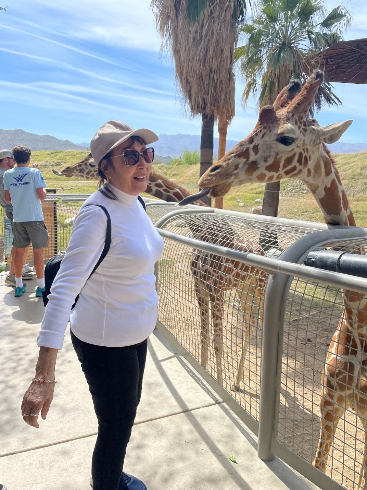
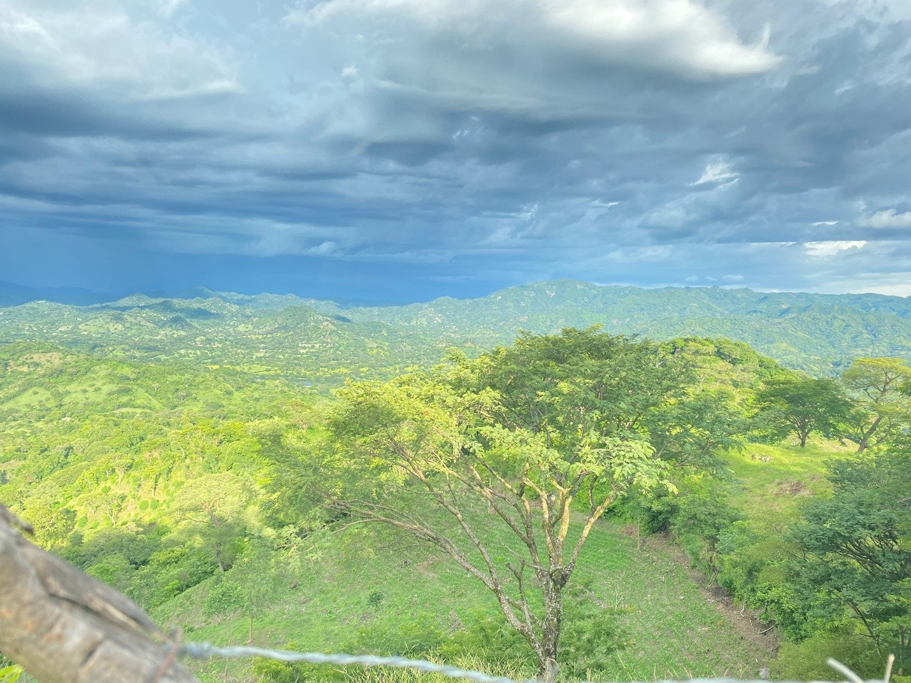
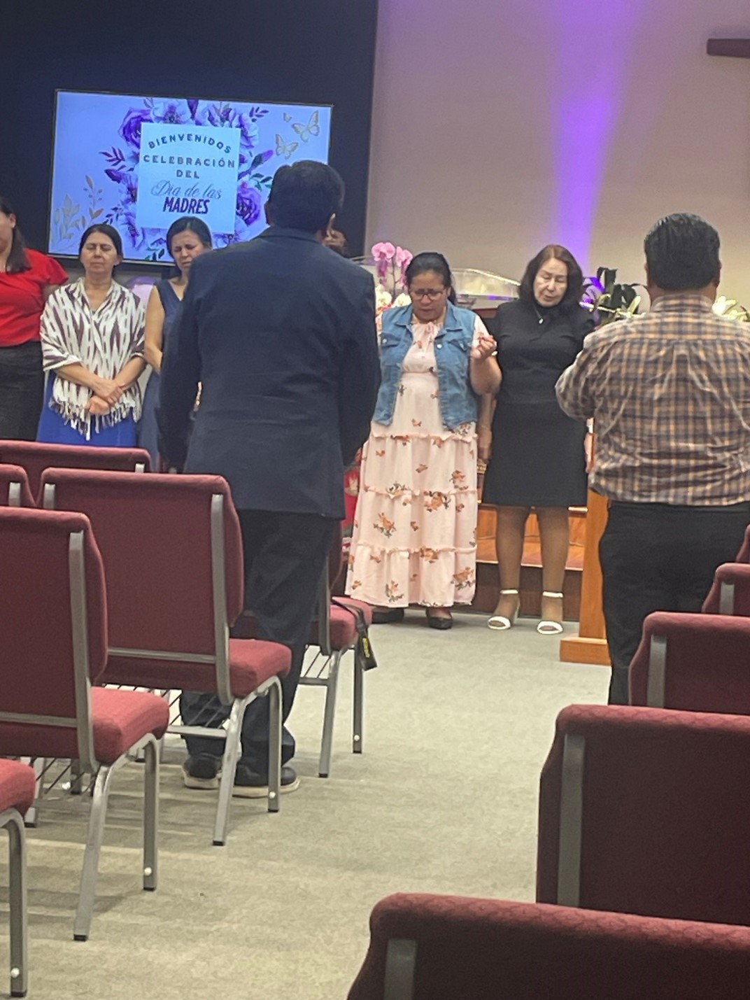

Welcome to Lucia's story, a journey from the coffee fields of El Salvador to a new life in the United States, filled with kindness, bravery, and peaceful happiness.
Learn More Discover her Hobbies
Lucia's greatest accomplishments was building a better future for her family.

This is the house she completed in 2012, Located in Chalatenango, San Salvador.
From bean to brew, Lucia crafts coffee the traditional way.

The fields she once worked with her mother.
A pillar in her community, Lucia offers kindness and support.

Through church she has managed to help those around her.